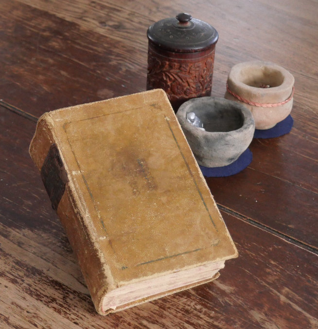

Dans le folklore breton — celui de mes ancêtres — l'Agrippa est un grimoire légendaire. Un recueil de secrets et de savoirs qu'on dit dangereux à posséder. On ne le nomme pas trop fort. On ne l'expose pas. On le garde dans l'ombre, à portée de main, pour celui qui sait quoi en faire.
Je suis Breton. Et j'ai mon Agrippa. Sauf que le mien ne contient pas de conjurations — il contient de la chimie. Ce qui, selon les époques, revient parfois au même.

L'héritage
Ce livre me vient de la mère de ma conjointe — qui l'avait elle-même hérité de son père, pharmacien de métier. Une British Pharmacopoeia de 1909. Un siècle de chimie condensé entre deux couvertures usées, transmis de main en main comme un secret de famille qu'on ne sait pas très bien comment nommer.
Il est en état passable. Quelques pages sont brûlées — précisément au chapitre de l'acide nitrique. Ce détail m'a toujours fasciné. Quelqu'un, avant moi, avait été curieux lui aussi. Ces pages ont été soigneusement réparées par Yvon Dionne — et oui, une des célèbres jumelles qui travaillait avec ma conjointe à la bibliothèque municipale. Même les grimoires ont besoin de bibliothécaires.
« On dit qu'on ne peut garder l'Agrippa chez soi sans en subir les conséquences. Chez moi, les conséquences ont été une passion qui dure depuis quarante ans. »
Ce qu'il a ouvert
J'ai commencé par la première page. J'ai avancé méthodiquement, produit après produit, jusqu'à la chimie organique qui m'intéressait moins. Entre les deux, il y avait tout un monde.
Pour trouver ma matière première, j'ai couru les mines de la province de Québec — le soufre, le mercure, le sel, les minéraux rares qu'on ne trouve pas dans les quincailleries. C'est comme ça que j'ai appris à connaître le territoire, les roches, ce que la terre cache.
Puis sont venus les trois acides forts. Et là — toutes les portes se sont ouvertes. Je ne dirai pas lesquelles. Certaines choses appartiennent au laboratoire.
Il est toujours là
Le vrai Agrippa breton, selon la légende, est un livre qu'on ne peut pas détruire — qu'on ne peut que transmettre. Le mien est sur une tablette dans mon laboratoire. Je le consulte encore à l'occasion. Il attend, avec la patience des vieux livres — celle qui ressemble beaucoup à la patience des pierres.
Un Breton, une Pharmacopoeia de 1909, des pages brûlées à l'acide nitrique, et quarante ans de curiosité. Certaines coïncidences ne sont pas des coïncidences.
Le savon était la porte.
La Pharmacopoeia était le couloir.
Ce qu'il y avait au bout —
c'est une autre histoire.